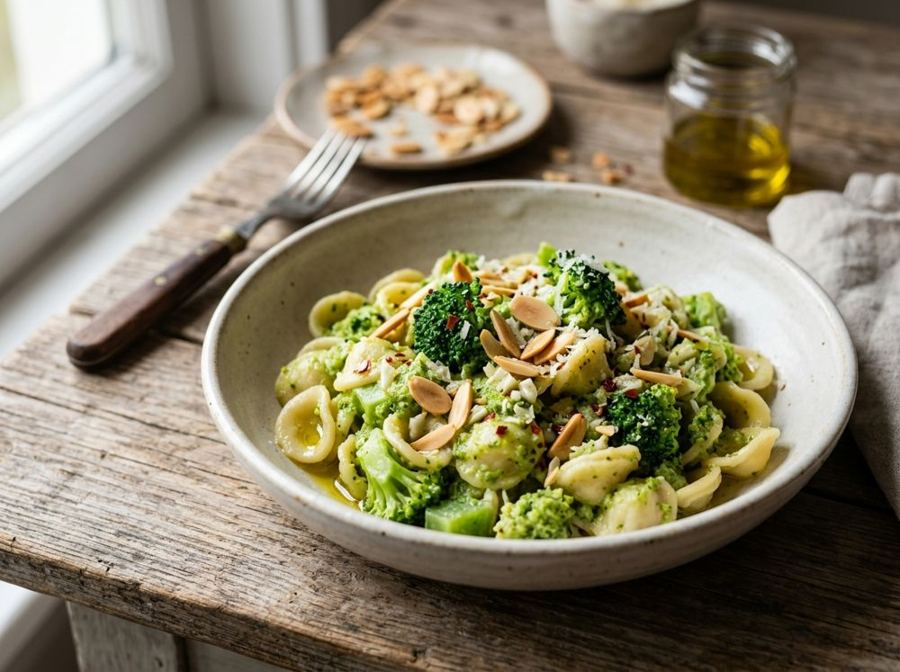

Pasta with broccoli and almonds
Creamy broccoli pasta with toasted almonds.
A traditional Puglian dish revisited with a crunchy twist. The tender broccoli coats the orecchiette, while toasted almonds provide an irresistible contrast in texture.
Ingredients
- Durum wheat semolina orecchiette320 g
- Broccoli (florets)600 g
- Flaked almonds60 g
- Garlic2 cloves
- Fresh chili pepper1
- Extra virgin olive oil60 ml
- Fine salt12 g
Allergens
Tree nuts, Gluten
Method
- Clean the broccoli by separating the florets and peeling the tender part of the stem, cutting it into small cubes.
- In a non-stick pan, toast the flaked almonds over medium heat for 3-4 minutes until golden and fragrant; set aside.
- Bring a large pot with about 4 liters of water to a boil and add 10g of salt.
- Drop the broccoli into the boiling water and cook for about 4 minutes from the moment the water returns to a boil.
- Add the orecchiette to the same pot as the broccoli and continue cooking according to the package instructions.
- Meanwhile, in a large skillet, heat the extra virgin olive oil with the crushed garlic cloves and chopped chili for 2 minutes over low heat.
- Before draining the pasta, take a ladle of cooking water and pour it into the skillet with the sautéed base, removing the garlic.
- Drain the orecchiette and broccoli al dente and transfer them directly to the skillet; sauté over high heat for 2 minutes to create a creamy emulsion.
- Turn off the heat, adjust salt if necessary, add the toasted almonds and a drizzle of raw oil before serving.
Tips
- Boil the broccoli and pasta in the same pot to infuse the orecchiette with the full vegetable flavor.
- Toast the almonds over low heat while monitoring them constantly to ensure an even golden color without burning.
- Reserve a ladle of cooking water to emulsify the pasta for a naturally creamy finish.
Variations
- Swap the almonds for toasted pine nuts for a more delicate and typically Mediterranean flavor.
- Add some chopped sun-dried tomatoes to the initial garlic base for an extra savory and colorful touch.
Nutrition facts (estimate)
| Per serving (380 g) | Per 100 g | |
|---|---|---|
| Energy | 2384 kJ / 570 kcal | 627 kJ / 150 kcal |
| Protein | 16 g | 4.3 g |
| Carbohydrates | 62 g | 16 g |
| of which sugars | 3.8 g | 1.0 g |
| Fat | 26 g | 6.9 g |
| of which saturates | 3.7 g | 1.0 g |
| Fibre | 9.1 g | 2.4 g |
| Salt | 2.4 g | 0.63 g |
AI estimates based on average CREA / USDA data: indicative only, not a substitute for medical or dietitian advice.
Open the recipe in the app for the shopping list, ingredient sheets and nearby shops.